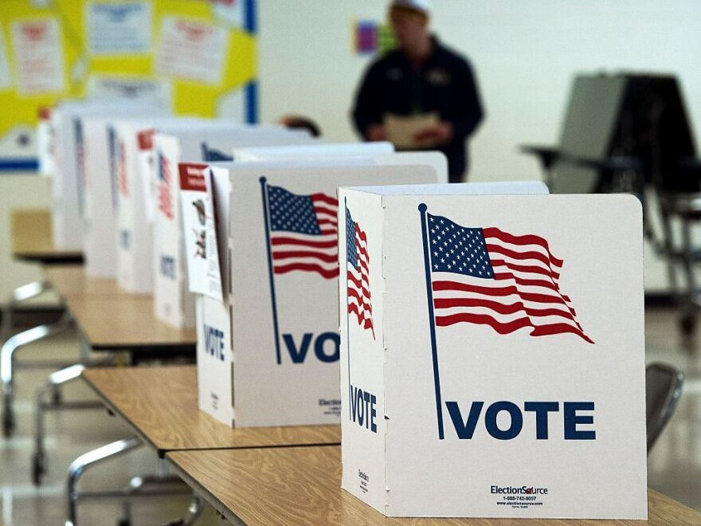
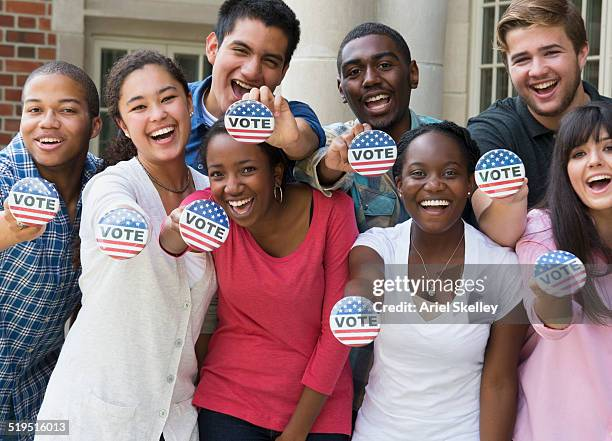

Introduction
Presidential Election Day in the United States is a major civic event held every four years. It marks a time when Americans exercise their democratic right to vote for the President, reflecting the principles of democracy.
History of Election Day
The tradition of holding elections on the first Tuesday after the first Monday in November was established in 1845. This date was chosen to accommodate rural farmers who needed to travel to polling stations after the harvest.
How Voting Works
Americans can vote in person at polling stations or by mail. Each state’s votes contribute to the Electoral College, a system that ultimately determines the winner.
Key Facts About Voting:
- Voting age in the U.S. is 18 and above.
- Each state has different methods and requirements for registration and voting.
- Election Day is a public holiday in some states.

Why Your Vote Matters
Voting is a way for citizens to have a say in their government. Each vote counts, and it's through this collective decision-making that leaders are chosen to represent the public's values and interests.
